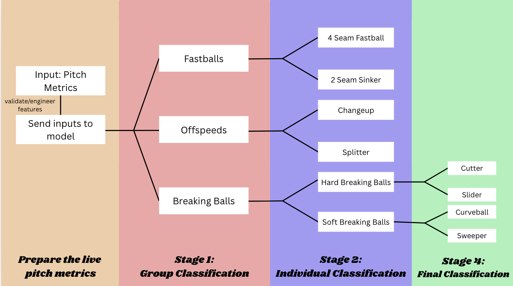

Pitch Classification Model
I developed a machine learning model to classify pitch types using live in-game TrackMan data. The model was trained on the 2024 MLB pitch data from Baseball Savant. The overall model was split into multiple classification stages, with the first stage classifying between fastballs, offspeed, and breaking balls. Subsequent stages further classified the specific pitch type within each category. The model used different features in each stage, based on which mix of features best differentiates between pitches in each specific category. I also created my own physics features that further help to create distinguish between pitch types.
Key Results
- Group Split Accuracy: 96.3%
- Fastballs Accuracy: 95.4%
- Offspeeds Accuracy: 86.7%
- Breaking Balls Accuracy: 90.0%
